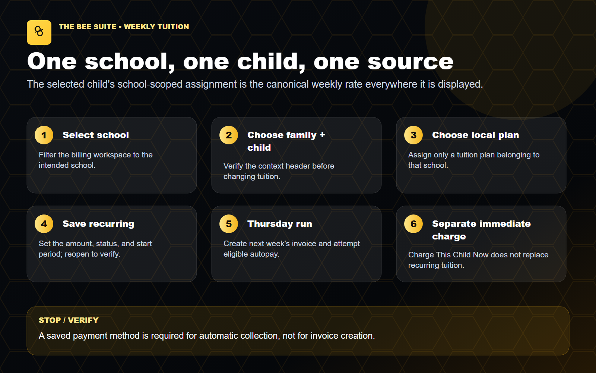

Find and review the correct family
Interactive synthetic form walkthrough. Demonstrates preparation and review; no save, send, access change or payment is submitted.
Read transcript · Read task guide50 practical task guides, organized around the work directors do every day. Find a task, follow the steps, and verify the result.
Prepared October 8, 2026 · Desktop first · Editable guides included
Synthetic training with computer-generated narration. Local saved workflows persist to a separate training store; form walkthroughs stop before saving; procedural lessons use instructional slides. No live school actions or external deliveries are demonstrated.
Watch videos · Read task guides · Training plan · Director pilot review
Narrated videos with captions and transcripts. Each identifies its demonstration type. Use fullscreen to read app controls. Narration uses the Microsoft Zira computer voice.
Interactive synthetic form walkthrough. Demonstrates preparation and review; no save, send, access change or payment is submitted.
Read transcript · Read task guideInteractive synthetic form walkthrough. Demonstrates preparation and review; no save, send, access change or payment is submitted.
Read transcript · Read task guideInteractive synthetic form walkthrough. Demonstrates preparation and review; no save, send, access change or payment is submitted.
Read transcript · Read task guideInteractive synthetic form walkthrough. Demonstrates preparation and review; no save, send, access change or payment is submitted.
Read transcript · Read task guideInteractive synthetic form walkthrough. Demonstrates preparation and review; no save, send, access change or payment is submitted.
Read transcript · Read task guideInteractive synthetic form walkthrough. Demonstrates preparation and review; no save, send, access change or payment is submitted.
Read transcript · Read task guideInteractive synthetic form walkthrough. Demonstrates preparation and review; no save, send, access change or payment is submitted.
Read transcript · Read task guideInteractive synthetic form walkthrough. Demonstrates preparation and review; no save, send, access change or payment is submitted.
Read transcript · Read task guideInteractive synthetic form walkthrough. Demonstrates preparation and review; no save, send, access change or payment is submitted.
Read transcript · Read task guideInteractive synthetic form walkthrough. Demonstrates preparation and review; no save, send, access change or payment is submitted.
Read transcript · Read task guideInteractive synthetic form walkthrough. Demonstrates preparation and review; no save, send, access change or payment is submitted.
Read transcript · Read task guideInteractive synthetic form walkthrough. Demonstrates preparation and review; no save, send, access change or payment is submitted.
Read transcript · Read task guideInteractive synthetic form walkthrough. Demonstrates preparation and review; no save, send, access change or payment is submitted.
Read transcript · Read task guideInteractive synthetic form walkthrough. Demonstrates preparation and review; no save, send, access change or payment is submitted.
Read transcript · Read task guideInteractive synthetic form walkthrough. Demonstrates preparation and review; no save, send, access change or payment is submitted.
Read transcript · Read task guideInteractive synthetic form walkthrough. Demonstrates preparation and review; no save, send, access change or payment is submitted.
Read transcript · Read task guideReal app controls with a separate synthetic training store. Saves are persisted and reopened locally; this is not production transaction evidence.
Read transcript · Read task guideReal app controls with a separate synthetic training store. Saves are persisted and reopened locally; this is not production transaction evidence.
Read transcript · Read task guideReal app controls with a separate synthetic training store. Saves are persisted and reopened locally; this is not production transaction evidence.
Read transcript · Read task guideReal app controls with a separate synthetic training store. Saves are persisted and reopened locally; this is not production transaction evidence.
Read transcript · Read task guideSource-reviewed step-by-step lesson. Instructional slides, not a recording of a completed live action.
Read transcript · Read task guideSource-reviewed step-by-step lesson. Instructional slides, not a recording of a completed live action.
Read transcript · Read task guideSource-reviewed step-by-step lesson. Instructional slides, not a recording of a completed live action.
Read transcript · Read task guideSource-reviewed step-by-step lesson. Instructional slides, not a recording of a completed live action.
Read transcript · Read task guideSource-reviewed step-by-step lesson. Instructional slides, not a recording of a completed live action.
Read transcript · Read task guideSource-reviewed step-by-step lesson. Instructional slides, not a recording of a completed live action.
Read transcript · Read task guideSource-reviewed step-by-step lesson. Instructional slides, not a recording of a completed live action.
Read transcript · Read task guideSource-reviewed step-by-step lesson. Instructional slides, not a recording of a completed live action.
Read transcript · Read task guideDirector dashboard orientation: school scope, alerts and the daily review.
Read transcriptTeacher-screen orientation for directors overseeing classroom work.
Read transcriptSynthetic parent view for staff explaining what linked families see.
Read transcriptSimplified billing-admin preview; invoice editor and payment submissions are covered in written guides.
Read transcriptKiosk entry-screen orientation; no real PIN, QR or attendance event is used.
Read transcriptStaff kiosk entry screen; no real employee code or punch is submitted.
Read transcriptParent-side message navigation; sending and recipient review are documented separately.
Read transcriptRead-only automation preview explaining triggers, review and follow-up.
Read transcriptCategory: Start here
Before you start: confirm the correct school and role. Use approved source records; perform live changes only within your assigned authority.
https://thebeesuite.io/directors and sign in.Before adding a family, have the approved source information in front of you:
$0.00.School and role match the task before opening any record.
Wrong school or unexpected access: stop and contact support. Wait for pending actions; reopen the record before retrying an uncertain save or send.
Source: sources/DIRECTOR_DAY_ONE_QUICK_START_GUIDE.md — 1. Start Every Workflow in the Correct School. Prepared October 8, 2026. SOP snapshot e06ad8d5; current source corrections are identified above. Written procedure; not a recording of a completed live action.
Category: Start here
Before you start: confirm the correct school and role. Use approved source records; perform live changes only within your assigned authority.
School Operations and check attendance, classroom assignments, ratios, and staff coverage.Attendance, reports, messages and unresolved issues have named owners.
Missing child, custody conflict or unsynced critical record needs immediate escalation. Wait for pending actions; reopen the record before retrying an uncertain save or send.
Source: sources/DIRECTOR_DAY_ONE_QUICK_START_GUIDE.md — 12. Director Daily Routine. Prepared October 8, 2026. SOP snapshot e06ad8d5; current source corrections are identified above. Written procedure; not a recording of a completed live action.
Category: Families and enrollment
Before you start: confirm the correct school and role. Use approved source records; perform live changes only within your assigned authority.
Navigation: People -> Families & Communication -> Families.
Add Family, Parent + Child.Family account, choose the exact School / center.Household / family label, or leave it blank to use the guardian's last name.Prior balance owed at cutover blank or 0 unless the family already owes a verified pre-BEE-Suite balance.Primary parent / guardian, enter the guardian's name, personal email, phone, relationship, preferred contact method, and employer if used.Student / child profile, enter the child's full name, preferred name, date of birth, age group, enrollment status, start date, and classroom.Save Family, Parent + Child once.Saved confirmation. Do not click again while the save is processing.Family Record Editor and verify the sticky Currently editing family data header shows the correct school, family, child, parent, billing account, and record counts.Reopen the saved family; confirm each relationship and the balance.
Search first. Do not create a second family after a timeout. Wait for pending actions; reopen the record before retrying an uncertain save or send.
Source: sources/DIRECTOR_DAY_ONE_QUICK_START_GUIDE.md — 2. Add a Brand-New Family, Parent, and Child. Prepared October 8, 2026. SOP snapshot e06ad8d5; current source corrections are identified above. Written procedure; not a recording of a completed live action.
Category: Families and enrollment
Before you start: confirm the correct school and role. Use approved source records; perform live changes only within your assigned authority.
Do not create a second household for a sibling.
Families & Communication -> Families.Family Record Editor, select the existing family.Children section.Add.Add child.Add Family, Parent + Child or the saved child profile, select Child not born yet.Expected due date, keep the status pending or waitlisted, and enter the planned start date if known.Date of birth and do not mark the child enrolled to create a fee.Billing & invoices, choose the family labeled Pending / waitlisted, select Prepare Enrollment Fee, then enter and confirm the exact amount and due date.Child not born yet, and enter the actual date of birth.The enrollment fee is one invoice only. It does not schedule tuition, enroll the child, enable autopay, or submit a payment.
Both children appear under the same correct household.
Do not invent a birth date or enroll a child just to create a fee. Wait for pending actions; reopen the record before retrying an uncertain save or send.
Source: sources/DIRECTOR_DAY_ONE_QUICK_START_GUIDE.md — 3. Add a Sibling to an Existing Family. Prepared October 8, 2026. SOP snapshot e06ad8d5; current source corrections are identified above. Written procedure; not a recording of a completed live action.
Category: Families and enrollment
Before you start: confirm the correct school and role. Use approved source records; perform live changes only within your assigned authority.
Creating the family is only the first pass. Complete the remaining sections before staff rely on the record.
Family Record Editor, select Guardians.Add beside the parent/guardian selector.Billing contact only if this adult is an approved payer/contact. A valid email is required.Parent portal login on only when this guardian is approved to access the family portal.Add parent.Do not give one guardian another guardian's login. Do not remove or merge a guardian merely because two names look similar; first verify custody, payer, pickup, portal, and communication history.
Pickups section.Authorized pickups, select Add, enter the person's name, phone, relationship, and verification notes, then select Add pickup.Emergency contacts, select Add, enter the person's name, phone, and relationship, then select Add contact.Children section.Allergies, select Add, enter the allergen, severity, and action plan, then select Add allergy.Medical notes, select Add, enter a clear category and note.Restricted to staff with child safety access selected when the information is sensitive.Do not use Mr. Bee to decide custody, pickup, allergy, medical, medication, licensing, or other child-safety information.
Reopen each saved section under the intended child or guardian.
Conflicting custody, pickup or medical records require school review. Wait for pending actions; reopen the record before retrying an uncertain save or send.
Source: sources/DIRECTOR_DAY_ONE_QUICK_START_GUIDE.md — 4. Finish the Family's Safety and Contact Record. Prepared October 8, 2026. SOP snapshot e06ad8d5; current source corrections are identified above. Written procedure; not a recording of a completed live action.
Category: Families and enrollment
Before you start: confirm the correct school and role. Use approved source records; perform live changes only within your assigned authority.
Use the family profile as the source of truth for parent portal access and child visibility.
Currently editing family data header before changing anything. Confirm the school, family, selected child, selected parent, billing account, and record counts.View full profile for the complete record and Open billing when the selected family or child needs billing work. These links preserve the current context.Stop and escalate if custody, pickup, or medical information conflicts with school paperwork.
Weekly tuition is read from the selected child's billing assignment. The family view shows the total of active child assignments and a per-child breakdown. Directors should open Billing to change the assignment rather than typing another tuition amount into family or enrollment notes.
Saved values remain correct after reopening the full profile.
Do not merge or remove contacts based on similar names. Wait for pending actions; reopen the record before retrying an uncertain save or send.
Source: sources/DIRECTOR_SOP.md — Families, Children, And Guardians. Prepared October 8, 2026. SOP snapshot e06ad8d5; current source corrections are identified above. Written procedure; not a recording of a completed live action.
Category: Parent access
Before you start: confirm the correct school and role. Use approved source records; perform live changes only within your assigned authority.
Parent access, the invitation email, the kiosk PIN, and billing are separate controls.
Family Record Editor -> Guardians, select the intended guardian.Parent portal login is selected and save the parent record.Portal linked.Parent Portal Access.Send Parent App Invite for a new guardian or Resend Parent App Invite for an already linked guardian.Accepted. Delivered is a separate status that confirms delivery.Send Parent Feature Guide & FAQ only after the guardian is linked.https://thebeesuite.io/parents.If the parent signs in but sees no family, verify the guardian-to-family link. Never ask a parent to send a password to the school.
Verify the exact guardian is linked; distinguish email accepted from delivered.
Resolve identity conflicts before inviting. Never share passwords in training. Wait for pending actions; reopen the record before retrying an uncertain save or send.
Source: sources/DIRECTOR_DAY_ONE_QUICK_START_GUIDE.md — 5. Prepare and Send Parent Portal Access. Prepared October 8, 2026. SOP snapshot e06ad8d5; current source corrections are identified above. Written procedure; not a recording of a completed live action.
Category: Parent access
Before you start: confirm the correct school and role. Use approved source records; perform live changes only within your assigned authority.
Before calling the family complete, verify every row:
| Check | Required result |
|---|---|
| School | Correct school appears in the sticky header |
| Family | Correct household, billing email, address, and custody note |
| Guardians | Correct guardians, relationships, emails, phones, payer status, and portal permissions |
| Child | Correct DOB, status, start date, classroom, permissions, and care notes |
| Safety | Pickups, emergency contacts, allergies, medical notes, and documents reviewed |
| Parent portal | Intended guardian is linked; invitation accepted by provider and delivery followed up |
| Tuition rate | Correct school rate or approved $0.00 no-family-charge rate |
| Tuition assignment | Correct child, enabled status, Weekly · 1 week ahead, correct start week, credits, and net amount |
| Family total | Equals the sum of all active child weekly rates |
| Opening balance | Zero unless verified pre-cutover debt was intentionally added once |
| Saved method | Correct masked card appears for this school's family account |
| Autopay | enabled only after ledger review and family authorization |
| Online payments | Selected school is ready to accept parent payments |
Each applicable item is verified for this family.
A saved family alone does not establish access, tuition or payment readiness. Wait for pending actions; reopen the record before retrying an uncertain save or send.
Source: sources/DIRECTOR_DAY_ONE_QUICK_START_GUIDE.md — 9. Final Onboarding Verification. Prepared October 8, 2026. SOP snapshot e06ad8d5; current source corrections are identified above. Written procedure; not a recording of a completed live action.
Category: Parent access
Before you start: confirm the correct school and role. Use approved source records; perform live changes only within your assigned authority.
The director app is browser-installed. Do not search the App Store unless store distribution has been separately approved.
Always start from:
https://thebeesuite.io/directors
https://thebeesuite.io/directors.https://thebeesuite.io and Safari does not say Not Secure.Add to Home Screen.BEE Suite Director icon/name.Add.https://thebeesuite.io/directors.Install app or Add to Home screen.BEE Suite Director.Use the browser's Share or menu option manually. On iPhone, use Safari for installation. Stop if the page is not secure.
The portal address matters:
/directors./teachers./parents.Installing from the wrong portal can create the wrong role-specific shortcut.
The shortcut opens the director entry point securely.
A missing banner is not failure; use the browser installation menu. Wait for pending actions; reopen the record before retrying an uncertain save or send.
Source: sources/DIRECTOR_DAY_ONE_QUICK_START_GUIDE.md — 11. Add the Director App to a Phone Home Screen. Prepared October 8, 2026. SOP snapshot e06ad8d5; current source corrections are identified above. Written procedure; not a recording of a completed live action.
Category: Billing
Before you start: confirm the correct school and role. Use approved source records; perform live changes only within your assigned authority.
Do not treat these as one switch:
Create Invoice Now also creates one due-now invoice; it is not an immediate card or bank charge. Charge Selected Method is a deliberate one-time stored-method charge and can be used while autopay is disabled.
Identify which of the three controls you intend to change.
Do not assume saving a method creates invoices or enables collection. Wait for pending actions; reopen the record before retrying an uncertain save or send.
Source: sources/BILLING_ADMIN_SOP.md — The Three Separate Billing Controls. Prepared October 8, 2026. SOP snapshot e06ad8d5; current source corrections are identified above. Written procedure; not a recording of a completed live action.
Category: Billing
Before you start: confirm the correct school and role. Use approved source records; perform live changes only within your assigned authority.

Navigation: People -> Billing & Payments -> Billing & invoices.
Currently editing billing data header.Tuition rate setup.Rate record, choose an existing school rate when it exactly matches the approved rate.New tuition rate.Funding, choose:Family-paid when the family owes a positive weekly amount.No family charge / CCDF / voucher-funded ($0.00) only when the family responsibility is intentionally zero.Family weekly amount for a family-paid rate.Save Rate.Do not overwrite a shared school plan merely to correct one family's history. If a subsidized family owes a copay, do not use the $0.00 option; use the approved positive family responsibility and weekly credit/agency workflow so the parent is charged only what the family owes.
Saving a rate does not assign it to a child.
Recurring tab.Status to Enabled.Tuition plan.Weekly · 1 week ahead under Billing cycle.Every 4 weeks · 4 weeks ahead unless the family has explicitly chosen one invoice covering four weeks.Start week in YYYY-W## format. This is the first service week that should be invoiced. Check the year carefully.Gross weekly tuition, Weekly credits, and Net weekly invoice.Save Tuition Assignment.Customer weekly tuition and Family weekly total.Weekly · 1 week ahead, the system creates the following service week's invoice on Thursday.$0.00 no-family-charge assignment stays visible on the child but creates no family invoice and no autopay attempt.Create Invoice Now creates one due-now invoice. It does not charge the card and does not replace the recurring assignment. Use it only when one exact week is confirmed missing.Create Invoice under Family charge creates a one-time invoice. It does not change future tuition.One-time fee / credit posts one late fee, vacation credit, or other approved balance adjustment. Review the projected balance, add the service week or reason, and confirm the normal recurring tuition remains unchanged.Edit invoice changes a specific open invoice. It does not change the child assignment.Batch tuition creates many invoices. Never use it for a period already covered by recurring tuition.Charge Selected Method is a deliberate one-time charge. It is not the same as enabling autopay.Run Autopay in the payment terminal attempts the selected due invoice immediately. Do not use it merely to test whether autopay is set up.Confirm child amount, family total, cadence and first service period.
Unclear funding responsibility or duplicate service coverage must be resolved first. Wait for pending actions; reopen the record before retrying an uncertain save or send.
Source: sources/DIRECTOR_DAY_ONE_QUICK_START_GUIDE.md — 6. Set Weekly Tuition Correctly for Each Child. Prepared October 8, 2026. SOP snapshot e06ad8d5; current source corrections are identified above. Written procedure; not a recording of a completed live action.
Category: Billing
Before you start: confirm the correct school and role. Use approved source records; perform live changes only within your assigned authority.
The opening balance is a cutover tool, not a tuition-rate field.
0 for a new family with no prior debt, normal weekly tuition setup, new invoices, or an existing family.0 if historical open invoices will be entered or imported separately; otherwise the same debt is counted twice.The intake form blocks negative opening balances and blocks adding another opening balance to a matched existing family.
Prior debt appears once and is supported by cutover records.
Never enter weekly tuition or a negative amount as opening debt. Wait for pending actions; reopen the record before retrying an uncertain save or send.
Source: sources/BILLING_ADMIN_SOP.md — Opening Balance: Use Once Or Leave Zero. Prepared October 8, 2026. SOP snapshot e06ad8d5; current source corrections are identified above. Written procedure; not a recording of a completed live action.
Category: Billing
Before you start: confirm the correct school and role. Use approved source records; perform live changes only within your assigned authority.
Use this flow for an approved enrollment, registration, or deposit fee before care begins. A pending family appears in the family selector with Pending / waitlisted; changing enrollment status is not required.
Billing & Invoices, select the exact school, and choose the prospective family.Prepare Enrollment Fee.Custom charge for an entered approved amount, or Product / fee when the school already has the exact fee configured.Do not use a tuition plan for a prospective family. This action does not make the child current, assign a classroom, start recurring tuition, enable autopay, or charge a payment method. If the family already has a current sibling, select the pending child under Family charge; the pending child still cannot receive recurring tuition.
One approved invoice appears without changing enrollment or autopay.
Do not mark a child enrolled to make the family billable. Wait for pending actions; reopen the record before retrying an uncertain save or send.
Source: sources/BILLING_ADMIN_SOP.md — Invoice A Pending Or Waitlisted Family. Prepared October 8, 2026. SOP snapshot e06ad8d5; current source corrections are identified above. Written procedure; not a recording of a completed live action.
Category: Billing
Before you start: confirm the correct school and role. Use approved source records; perform live changes only within your assigned authority.
Billing & Invoices.Confirm the invoice once on the ledger with the correct period and amount.
Check for an existing charge covering the same service before creating another. Wait for pending actions; reopen the record before retrying an uncertain save or send.
Source: sources/BILLING_ADMIN_SOP.md — Create Or Review A Family Invoice. Prepared October 8, 2026. SOP snapshot e06ad8d5; current source corrections are identified above. Written procedure; not a recording of a completed live action.
Category: Billing
Before you start: confirm the correct school and role. Use approved source records; perform live changes only within your assigned authority.
Use the common One-time fee / credit task for an approved one-family exception. Do not temporarily change the child's saved tuition plan, recurring additional charges, or recurring credits and then try to remember to change them back.
Billing & Payments -> Billing & invoices.One-time fee / credit under Common billing tasks.Late fee to post one debit and increase the family balance.Vacation credit to post one credit and lower the family balance.Other credit or Other fee / debit only when the approved reason does not fit a named action.Applies to date. The balance changes when posted; this date identifies the service or policy date in the ledger. Do not enter a minus sign; the selected action controls whether the ledger amount is positive or negative.Statement note. A note is required for either Other action and is shown in the family ledger.Current balance, the signed one-time change, and Projected balance.This is a ledger adjustment. It does not submit a payment, enable autopay, void or edit an invoice, or repeat on future billing runs. If policy requires a separate formal invoice for the fee, use Family charge -> Custom charge instead and do not also post a debit.
Ledger changes once; recurring tuition remains unchanged.
Do not also invoice the same fee or use a temporary recurring-rate change. Wait for pending actions; reopen the record before retrying an uncertain save or send.
Source: sources/BILLING_ADMIN_SOP.md — Post One Late Fee Or Vacation Credit. Prepared October 8, 2026. SOP snapshot e06ad8d5; current source corrections are identified above. Written procedure; not a recording of a completed live action.
Category: Billing
Before you start: confirm the correct school and role. Use approved source records; perform live changes only within your assigned authority.
Create Batch Invoices only after reviewing scope. This does not directly charge Stripe.Review the exact school, period, included families and final results.
Do not repeat a run until the first result and existing invoices are reconciled. Wait for pending actions; reopen the record before retrying an uncertain save or send.
Source: sources/BILLING_ADMIN_SOP.md — Batch Tuition Run. Prepared October 8, 2026. SOP snapshot e06ad8d5; current source corrections are identified above. Written procedure; not a recording of a completed live action.
Category: Billing
Before you start: confirm the correct school and role. Use approved source records; perform live changes only within your assigned authority.
Use this when a family needs to save ACH/bank or card details for future payments.
Billing & Invoices.Save card is presented first and Connect bank account remains available for bank verification.Verify the intended payer receives the secure request through the approved workflow.
Do not collect card or bank details in email, chat or a recording. Wait for pending actions; reopen the record before retrying an uncertain save or send.
Source: sources/BILLING_ADMIN_SOP.md — Send A Secure Payment Method Request. Prepared October 8, 2026. SOP snapshot e06ad8d5; current source corrections are identified above. Written procedure; not a recording of a completed live action.
Category: Billing
Before you start: confirm the correct school and role. Use approved source records; perform live changes only within your assigned authority.
Current source review: family-record-editor.tsx, billing-workbench.tsx and /api/billing/autopay at c62c6ec1. This updates the older SOP wording.
The parent’s consent, intended method and displayed autopay state agree; no test charge is needed.
Pending payment, wrong connected account or missing authorization blocks activation. Wait for pending actions; reopen the record before retrying an uncertain save or send.
Source: src/components/billing-workbench.tsx and src/app/api/billing/autopay/route.ts (c62c6ec1) — Parent-authorized autopay. Prepared October 8, 2026. SOP snapshot e06ad8d5; current source corrections are identified above. Written procedure; not a recording of a completed live action.
Category: Billing
Before you start: confirm the correct school and role. Use approved source records; perform live changes only within your assigned authority.
Status, invoice, payment attempt and ledger agree before any retry.
Processing or an uncertain result is not permission to charge again. Wait for pending actions; reopen the record before retrying an uncertain save or send.
Source: sources/BILLING_ADMIN_SOP.md — Failed Or Pending Payment Procedure. Prepared October 8, 2026. SOP snapshot e06ad8d5; current source corrections are identified above. Written procedure; not a recording of a completed live action.
Category: Billing
Before you start: confirm the correct school and role. Use approved source records; perform live changes only within your assigned authority.
Use this only for an authorized school with a ready connected account and a certified reader assigned to that school's Stripe Terminal location.
In-Person Card Reader.Card details are encrypted by Stripe hardware and never enter The BEE Suite. Smart readers are controlled over the network; direct USB data use requires Stripe's Android mobile-reader SDK.
One confirmed payment and receipt match the family and amount.
Stop if reader, school account, parent presence or payment result is uncertain. Wait for pending actions; reopen the record before retrying an uncertain save or send.
Source: sources/BILLING_ADMIN_SOP.md — Run An In-Person Stripe Terminal Payment. Prepared October 8, 2026. SOP snapshot e06ad8d5; current source corrections are identified above. Written procedure; not a recording of a completed live action.
Category: Billing
Before you start: confirm the correct school and role. Use approved source records; perform live changes only within your assigned authority.
Payment, invoice and ledger agree with processor evidence.
Escalate discrepancies; do not delete history to make totals match. Wait for pending actions; reopen the record before retrying an uncertain save or send.
Source: sources/BILLING_ADMIN_SOP.md — Reconciliation Procedure. Prepared October 8, 2026. SOP snapshot e06ad8d5; current source corrections are identified above. Written procedure; not a recording of a completed live action.
Category: Billing
Before you start: confirm the correct school and role. Use approved source records; perform live changes only within your assigned authority.
Every exception is resolved or assigned for follow-up.
Agency and family responsibility must remain separate. Wait for pending actions; reopen the record before retrying an uncertain save or send.
Source: sources/BILLING_ADMIN_SOP.md — Weekly Billing Checklist. Prepared October 8, 2026. SOP snapshot e06ad8d5; current source corrections are identified above. Written procedure; not a recording of a completed live action.
Category: Daily operations
Before you start: confirm the correct school and role. Use approved source records; perform live changes only within your assigned authority.
Directors are responsible for roster and classroom accuracy.
Teachers should not work from another teacher's account or from a wrong classroom roster.
Each teacher uses the correct account and classroom roster.
Account, role or classroom changes require the appropriate school authorization. Wait for pending actions; reopen the record before retrying an uncertain save or send.
Source: sources/DIRECTOR_SOP.md — Teacher Workflow Oversight. Prepared October 8, 2026. SOP snapshot e06ad8d5; current source corrections are identified above. Written procedure; not a recording of a completed live action.
Category: Daily operations
Before you start: confirm the correct school and role. Use approved source records; perform live changes only within your assigned authority.
Attendance must match the child's real classroom status.
Stop and ask a director before changing attendance for a child who is not assigned to your classroom.
Check the correct day, child and classroom; verify the resulting status.
This is the teacher procedure for director oversight. Never invent attendance times. Wait for pending actions; reopen the record before retrying an uncertain save or send.
Source: sources/TEACHER_SOP.md — Attendance. Prepared October 8, 2026. SOP snapshot e06ad8d5; current source corrections are identified above. Written procedure; not a recording of a completed live action.
Category: Daily operations
Before you start: confirm the correct school and role. Use approved source records; perform live changes only within your assigned authority.
Daily reports should be accurate, timely, and parent-ready.
Do not include another child's name or private information in a parent-facing report.
Report content is complete for the intended child and date before sharing.
Teacher procedure: confirm the actual share result; a draft is not a sent report. Wait for pending actions; reopen the record before retrying an uncertain save or send.
Source: sources/TEACHER_SOP.md — Daily Reports. Prepared October 8, 2026. SOP snapshot e06ad8d5; current source corrections are identified above. Written procedure; not a recording of a completed live action.
Category: Daily operations
Before you start: confirm the correct school and role. Use approved source records; perform live changes only within your assigned authority.
If the tablet loses connection, The BEE Suite may queue actions.
Queued actions have synced and appear once after reconnecting.
Do not re-enter the same queued events while sync is unresolved. Wait for pending actions; reopen the record before retrying an uncertain save or send.
Source: sources/TEACHER_SOP.md — Offline Queue. Prepared October 8, 2026. SOP snapshot e06ad8d5; current source corrections are identified above. Written procedure; not a recording of a completed live action.
Category: Records and communication
Before you start: confirm the correct school and role. Use approved source records; perform live changes only within your assigned authority.
Use documents for records that must be requested, reviewed, acknowledged, uploaded, or retained.
Do not upload sensitive documents to the wrong child or family record. If that happens, stop and escalate as a privacy incident.
Correct person, document, submission and review status agree.
Wrong-person upload is a privacy incident; stop and escalate. Wait for pending actions; reopen the record before retrying an uncertain save or send.
Source: sources/DIRECTOR_SOP.md — Documents, Forms, And Signatures. Prepared October 8, 2026. SOP snapshot e06ad8d5; current source corrections are identified above. Written procedure; not a recording of a completed live action.
Category: Records and communication
Before you start: confirm the correct school and role. Use approved source records; perform live changes only within your assigned authority.
Use the smallest appropriate audience.
Confirm the current recipient list, final wording and send result.
Use the smallest appropriate audience and omit private details from broadcasts. Wait for pending actions; reopen the record before retrying an uncertain save or send.
Source: sources/DIRECTOR_SOP.md — Communications. Prepared October 8, 2026. SOP snapshot e06ad8d5; current source corrections are identified above. Written procedure; not a recording of a completed live action.
Category: Kiosk and staffing
Before you start: confirm the correct school and role. Use approved source records; perform live changes only within your assigned authority.
Do not run the lobby kiosk until PIN_HASH_SECRET or the approved production secret is configured.
Do not activate the kiosk merely because setup or training passed. The named school still needs its separate dated kiosk/PIN approval.
Correct school and an approved test record pass check-in and check-out.
Kiosk activation and credentials need school approval; training does not activate them. Wait for pending actions; reopen the record before retrying an uncertain save or send.
Source: sources/KIOSK_AND_AUTHORIZED_PICKUP_GUIDE.md — Director Setup. Prepared October 8, 2026. SOP snapshot e06ad8d5; current source corrections are identified above. Written procedure; not a recording of a completed live action.
Category: Kiosk and staffing
Before you start: confirm the correct school and role. Use approved source records; perform live changes only within your assigned authority.
Family check-in if the mode selector is shown.Enter PIN or Scan QR code.Verify Family PIN.Check In.Selected children show a completed check-in confirmation.
Wrong family, missing child or protected pickup warning: stop. Wait for pending actions; reopen the record before retrying an uncertain save or send.
Source: sources/KIOSK_AND_AUTHORIZED_PICKUP_GUIDE.md — Parent Or Authorized Pickup Check-In. Prepared October 8, 2026. SOP snapshot e06ad8d5; current source corrections are identified above. Written procedure; not a recording of a completed live action.
Category: Kiosk and staffing
Before you start: confirm the correct school and role. Use approved source records; perform live changes only within your assigned authority.
Family check-in if the mode selector is shown.Enter PIN or Scan QR code.Verify Family PIN.Check Out.By tapping check in or check out, the kiosk records PIN or QR credential evidence for the selected children. Staff should verify a separate pickup adult when school policy requires it. The system records credential confirmation separately from any typed or written signature requirement.
Verify the adult under school policy and wait for completed checkout.
A valid credential does not override a custody or pickup restriction. Wait for pending actions; reopen the record before retrying an uncertain save or send.
Source: sources/KIOSK_AND_AUTHORIZED_PICKUP_GUIDE.md — Parent Or Authorized Pickup Check-Out. Prepared October 8, 2026. SOP snapshot e06ad8d5; current source corrections are identified above. Written procedure; not a recording of a completed live action.
Category: Kiosk and staffing
Before you start: confirm the correct school and role. Use approved source records; perform live changes only within your assigned authority.
Staff time clock.Continue to Staff Clock.Clock In or Clock Out.Teachers should not use another staff member's code.
The correct staff member and updated clock status are shown.
Never use another staff member’s code or repeat an ambiguous punch. Wait for pending actions; reopen the record before retrying an uncertain save or send.
Source: sources/KIOSK_AND_AUTHORIZED_PICKUP_GUIDE.md — Staff Clock-In Or Clock-Out. Prepared October 8, 2026. SOP snapshot e06ad8d5; current source corrections are identified above. Written procedure; not a recording of a completed live action.
Category: Setup and support
Before you start: confirm the correct school and role. Use approved source records; perform live changes only within your assigned authority.
Open School setup for the named school and choose exactly one path. Do not create a placeholder import for a new school and do not re-enter an operating school's roster by hand merely to avoid import review.
Use this path when an operating school has families, children, balances, schedules, staff, or history in another system.
READY_FOR_DIRECTOR_REVIEW and the director records final school-data confirmation.Use this path for a new school that has no prior operating roster to import.
Changing the saved path or changing roster/import evidence invalidates the prior data confirmation and requires a fresh review. Data confirmation does not activate any other launch gate.
One reviewed starting point and its school-specific receipt are retained.
Import, clean-start, live billing and school launch remain separate decisions. Wait for pending actions; reopen the record before retrying an uncertain save or send.
Source: sources/SCHOOL_TRANSITION_SETUP_AND_CUTOVER_SOP.md — 2. Choose And Save One Data Starting Point. Prepared October 8, 2026. SOP snapshot e06ad8d5; current source corrections are identified above. Written procedure; not a recording of a completed live action.
Category: Setup and support
Before you start: confirm the correct school and role. Use approved source records; perform live changes only within your assigned authority.
The director or approved ProCare administrator must confirm that the export package belongs to the correct location and contains the records the school relies on.
Use DIRECTOR_PROCARE_DATA_CLEAN_START_GUIDE.md as the required director procedure. The private source packages live under docs/procare-exports/<LOCATION>/; raw/ is immutable source evidence and review/ contains derived working files.
VERIFIED, NEEDS CORRECTION, MISSING SOURCE, or NOT APPLICABLE, with the exact raw source path, counts, reviewer, and exception owner.For every spot-check, verify:
Stop and hold the affected records if a guardian, payer, pickup, emergency contact, family relationship, date of birth, classroom, balance, or safety field is missing or ambiguous. Do not invent a value to make the import appear complete.
Skip this section only when the saved starting point is START WITH A CLEAN WORKSPACE and the school has confirmed that no prior records are expected.
Reconcile source records, relationships and balances before readiness signoff.
Keep recoverable source exports; do not treat import success as verification. Wait for pending actions; reopen the record before retrying an uncertain save or send.
Source: sources/SCHOOL_TRANSITION_SETUP_AND_CUTOVER_SOP.md — 3. Director ProCare Export And Import Review. Prepared October 8, 2026. SOP snapshot e06ad8d5; current source corrections are identified above. Written procedure; not a recording of a completed live action.
Category: Setup and support
Before you start: confirm the correct school and role. Use approved source records; perform live changes only within your assigned authority.
The director validates the operational workspace before teachers, parents, or the lobby kiosk depend on it.
https://thebeesuite.io/directors with the approved director account.DeviceSession records and the user's application sessionVersion; a prior signed application cookie can remain usable after an Auth ban, and a cookie without a device-session ID cannot be found by inventory. Before access GO, invalidate older cookies for every in-scope account by incrementing its session version through the separately approved identity/session gate and verifying old cookies are denied, or prove that issuance of cookies without device sessions has stopped and the full 12-hour cookie lifetime has elapsed. Merely reading the current version or revoking listed device sessions does not prove the untracked cookies expired. Treat any unexpected access or outstanding session as an access-GO blocker until its scope is approved or revoked and denial is verified. Review all active grants; the Prisma User.role and effective UserAccessGrant.role for this school must both match approved duties and scope, with any other grants separately justified. A grant alone does not constrain a wrong application role. Classify missing Auth identities as intentionally uninvited or blockers with the school owner. An active staff profile or grant alone does not prove login readiness. Do not create accounts, change access, or send invitations from this review.Wrong-school, wrong-classroom, or wrong-family visibility is an immediate stop condition.
School facts, rooms, roles and operating processes have verified owners.
Do not change access or provider settings merely to complete a checklist. Wait for pending actions; reopen the record before retrying an uncertain save or send.
Source: sources/SCHOOL_TRANSITION_SETUP_AND_CUTOVER_SOP.md — 5. Director School And Staff Setup. Prepared October 8, 2026. SOP snapshot e06ad8d5; current source corrections are identified above. Written procedure; not a recording of a completed live action.
Category: Setup and support
Before you start: confirm the correct school and role. Use approved source records; perform live changes only within your assigned authority.
Record each gate separately:
Final decision: GO / NO-GO
Record:
HELD OFF is not PASS. Technical readiness is not approval to send invitations, activate the kiosk, bill families, process payments, or retire a previous system.
Each required gate has a dated owner decision.
HELD OFF is not PASS; technical readiness does not authorize business activation. Wait for pending actions; reopen the record before retrying an uncertain save or send.
Source: sources/SCHOOL_TRANSITION_SETUP_AND_CUTOVER_SOP.md — 10. School-Specific GO Or NO-GO Record. Prepared October 8, 2026. SOP snapshot e06ad8d5; current source corrections are identified above. Written procedure; not a recording of a completed live action.
Category: Setup and support
Before you start: confirm the correct school and role. Use approved source records; perform live changes only within your assigned authority.
Navigation: Command -> AI Command.
All visible schools can be used for a summary, but one exact school is required before AI can stage data changes.Review command.Useful examples:
What needs my attention today? Prioritize incidents, overdue invoices, unread family messages, staffing, attendance, and unsent daily reports.Summarize today's exceptions for this school. Do not change data.Draft a warm reminder for the Johnson family about their requested document. Do not send it.Show me which open invoices need director review. Do not charge or edit anything.Mr. Bee can stage ordinary family, guardian, child, school, enrollment, classroom, open-invoice, and weekly tuition changes. It cannot create a new family or child; use the intake workflow for that.
Review command.Confirm the exact changes panel.Confirm and apply only when every item is correct.Cancel if any target, amount, classroom, status, or date is wrong, then rewrite the request more precisely.Safer change examples:
At [school], move [child full name] to enrolled in [classroom]. Stage the change for my review.At [school], update [family name]'s billing email to [email]. Stage only that field.At [school], set [child full name]'s weekly tuition to $250, billing cycle weekly, start week 2026-W33, enabled. Do not create an invoice, save a card, or change autopay.At [school], update open invoice [invoice number] to $125 due 2026-08-14 with description [text]. Do not submit a payment.Mr. Bee is blocked from changing access, roles, authentication, invitations, PINs, payments, refunds, payouts, autopay, message sending, deletions, merges, or provider settings. It may draft a message, but a staff member must review and send it from the communication workflow.
AI can carry out an exact, approved billing update; it must not decide what a family should owe. Do not use AI as the final decision-maker for billing policy, safety, custody, medical, legal, licensing, or compliance matters.
Inspect the exact proposed patch, then verify approved changes in the normal record.
Never delegate custody, safety, medical or payment-policy decisions to AI. Wait for pending actions; reopen the record before retrying an uncertain save or send.
Source: sources/DIRECTOR_DAY_ONE_QUICK_START_GUIDE.md — 10. Use Mr. Bee to Help With Director Work. Prepared October 8, 2026. SOP snapshot e06ad8d5; current source corrections are identified above. Written procedure; not a recording of a completed live action.
Category: Setup and support
Before you start: confirm the correct school and role. Use approved source records; perform live changes only within your assigned authority.
Escalate with the following information:
Use urgent escalation for login outages, wrong-school visibility, payment failures, privacy exposure, missing children, custody conflicts, or incorrect incident/document visibility.
Support has the exact context, time, expected result and safe evidence.
Urgently escalate privacy, wrong-school access, missing children and payment duplication. Wait for pending actions; reopen the record before retrying an uncertain save or send.
Source: sources/DIRECTOR_SOP.md — Escalation Checklist. Prepared October 8, 2026. SOP snapshot e06ad8d5; current source corrections are identified above. Written procedure; not a recording of a completed live action.
Category: Records and communication
Before you start: confirm the correct school and role. Use approved source records; perform live changes only within your assigned authority.
The saved status, notification evidence and acknowledgement state are accurate.
Incomplete facts, injury response or safety concerns go through the school’s incident process. Wait for pending actions; reopen the record before retrying an uncertain save or send.
Source: src/components/incident-review-actions.tsx. Prepared October 8, 2026. SOP snapshot e06ad8d5; current source corrections are identified above. Written procedure; not a recording of a completed live action.
Category: Records and communication
Before you start: confirm the correct school and role. Use approved source records; perform live changes only within your assigned authority.
Sharing status matches the decision; approval is a parent-sharing action.
Wrong child, missing permission or sensitive content: do not approve. Wait for pending actions; reopen the record before retrying an uncertain save or send.
Source: src/components/media-review-actions.tsx. Prepared October 8, 2026. SOP snapshot e06ad8d5; current source corrections are identified above. Written procedure; not a recording of a completed live action.
Category: Reporting
Before you start: confirm the correct school and role. Use approved source records; perform live changes only within your assigned authority.
Export totals and active roster agree with the selected school.
Historical or withdrawn records must not be mistaken for current enrollment. Wait for pending actions; reopen the record before retrying an uncertain save or send.
Source: sources/DIRECTOR_SOP.md. Prepared October 8, 2026. SOP snapshot e06ad8d5; current source corrections are identified above. Written procedure; not a recording of a completed live action.
Category: Reporting
Before you start: confirm the correct school and role. Use approved source records; perform live changes only within your assigned authority.
The intended school/week appears once with the correct status and values.
An approved locked report requires the authorized correction process; do not create a duplicate week. Wait for pending actions; reopen the record before retrying an uncertain save or send.
Source: src/components/fte-report-form.tsx. Prepared October 8, 2026. SOP snapshot e06ad8d5; current source corrections are identified above. Written procedure; not a recording of a completed live action.
Category: Billing
Before you start: confirm the correct school and role. Use approved source records; perform live changes only within your assigned authority.
Request status and completed refund status are distinguished.
Uncertain original payment, pending refund or duplicate request requires reconciliation. Wait for pending actions; reopen the record before retrying an uncertain save or send.
Source: src/components/billing-workbench.tsx. Prepared October 8, 2026. SOP snapshot e06ad8d5; current source corrections are identified above. Written procedure; not a recording of a completed live action.
Category: Billing
Before you start: confirm the correct school and role. Use approved source records; perform live changes only within your assigned authority.
Receipt evidence and the single saved ledger entry match.
Do not use this action for a pending card/ACH transaction or agency remittance. Wait for pending actions; reopen the record before retrying an uncertain save or send.
Source: src/components/billing-workbench.tsx. Prepared October 8, 2026. SOP snapshot e06ad8d5; current source corrections are identified above. Written procedure; not a recording of a completed live action.
Category: Billing
Before you start: confirm the correct school and role. Use approved source records; perform live changes only within your assigned authority.
Expanded agency batch, dual-review and period-close functions require separate release and exact-school activation verification. This tutorial does not assert they are active.
Agency evidence, claim and remittance reconcile independently of family balances.
A Stripe payout or unexplained bank deposit is not proof of agency remittance. Wait for pending actions; reopen the record before retrying an uncertain save or send.
Source: sources/BILLING_ADMIN_SOP.md. Prepared October 8, 2026. SOP snapshot e06ad8d5; current source corrections are identified above. Written procedure; not a recording of a completed live action.
Category: Families and enrollment
Before you start: confirm the correct school and role. Use approved source records; perform live changes only within your assigned authority.
Lead follow-up, registration, enrollment and parent access have distinct verified states.
Do not send another registration or create a duplicate family because a prior result is unclear. Wait for pending actions; reopen the record before retrying an uncertain save or send.
Source: sources/DIRECTOR_SOP.md. Prepared October 8, 2026. SOP snapshot e06ad8d5; current source corrections are identified above. Written procedure; not a recording of a completed live action.
Category: Kiosk and staffing
Before you start: confirm the correct school and role. Use approved source records; perform live changes only within your assigned authority.
Saved punches, decimal hours and printed pay period agree.
An incomplete shift or uncertain time requires review before payroll processing. Wait for pending actions; reopen the record before retrying an uncertain save or send.
Source: src/components/staff-management-panel.tsx. Prepared October 8, 2026. SOP snapshot e06ad8d5; current source corrections are identified above. Written procedure; not a recording of a completed live action.
Category: Kiosk and staffing
Before you start: confirm the correct school and role. Use approved source records; perform live changes only within your assigned authority.
Teacher, dates, times and status match the approved schedule.
Resolve overlapping or uncertain coverage before relying on it for classroom staffing. Wait for pending actions; reopen the record before retrying an uncertain save or send.
Source: src/components/staff-management-panel.tsx. Prepared October 8, 2026. SOP snapshot e06ad8d5; current source corrections are identified above. Written procedure; not a recording of a completed live action.
Category: Daily operations
Before you start: confirm the correct school and role. Use approved source records; perform live changes only within your assigned authority.
The existing classroom record shows the correct capacity, age group and ratio.
Do not guess licensed capacity or treat an edited ratio as proof of actual staffing compliance. Wait for pending actions; reopen the record before retrying an uncertain save or send.
Source: src/components/classroom-setup-panel.tsx. Prepared October 8, 2026. SOP snapshot e06ad8d5; current source corrections are identified above. Written procedure; not a recording of a completed live action.
Category: Kiosk and staffing
Before you start: confirm the correct school and role. Use approved source records; perform live changes only within your assigned authority.
Staff profile, assigned classroom and source credentials agree.
Role grants, login provisioning, kiosk codes and deactivation need their own authorization. Wait for pending actions; reopen the record before retrying an uncertain save or send.
Source: src/components/staff-management-panel.tsx. Prepared October 8, 2026. SOP snapshot e06ad8d5; current source corrections are identified above. Written procedure; not a recording of a completed live action.